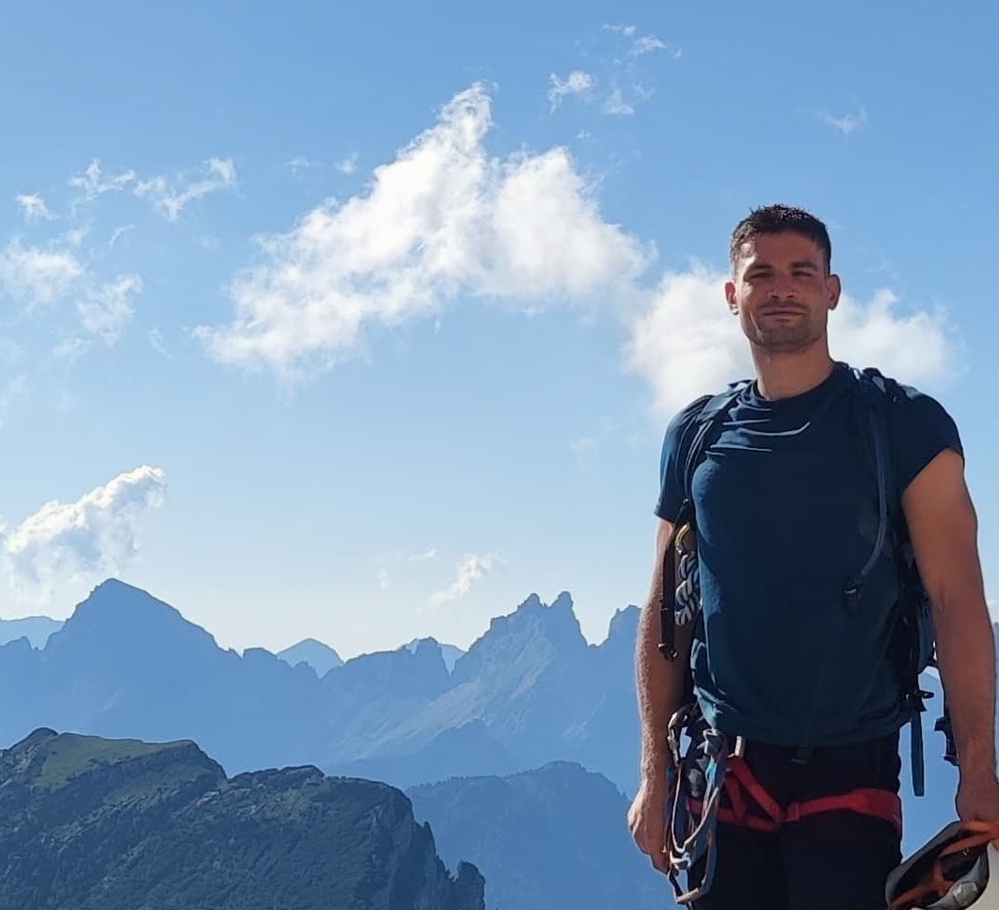

About
I am a PhD candidate in Physics at The University of Texas at Austin, advised by Prof. Hsin-Yu Chen. I study how gravitational waves from merging black holes and neutron stars can be used to learn about compact binaries and the expansion of the Universe. In particular, I am interested in whether these cosmic signals can help resolve the current tension in measurements of the Hubble constant. My work combines gravitational-wave astronomy, cosmology, and Bayesian statistics, and I am a member of the LIGO-Virgo-KAGRA Collaboration. Before moving to Austin, I completed my B.Sc. in Astronomy and my M.Sc. in Astrophysics and Cosmology at the Università degli Studi di Padova, Italy.
Publications
-
arXiv preprint, 2026.
-
Identifying the host of compact binary mergers
arXiv preprint, 2026.
-
Classical and Quantum Gravity, 42, 195002, 2025.
-
Mitigating the binary viewing angle bias for standard sirens
The Astrophysical Journal Letters, 974, L16, 2024.
Talks & Workshops
-
AI Boot Camp for Astronomers: Hands-on AI training for the next generation of astronomy research
Austin, Texas, June 2026.
-
American Physical Society Global Summit
Denver, Colorado, March 2026.
-
GWfreeride: Carving the AI Gradient in Gravitational-Wave Astronomy
Sexten, Italy, January 2026.
-
Prospects in Theoretical Physics 2025: Gravitational Waves from Theory to Observation
Princeton, New Jersey, July 2025.
-
Caltech Relativistic Astrophysics Summer School 2025
Pasadena, California, June 2025.
-
American Physical Society Global Summit
Anaheim, California, March 2025.
-
EDSU Tools 2024 — 5th World Summit
Île de Noirmoutier, France, June 2024.
-
American Physical Society April Meeting
Sacramento, California, April 2024.
-
FERMILAB Summer Student School at LNF
Frascati, Italy, August 2021.
-
Statistical Methods for the Detection, Classification, and Inference of Relativistic Objects
Providence, Rhode Island, November 2020.